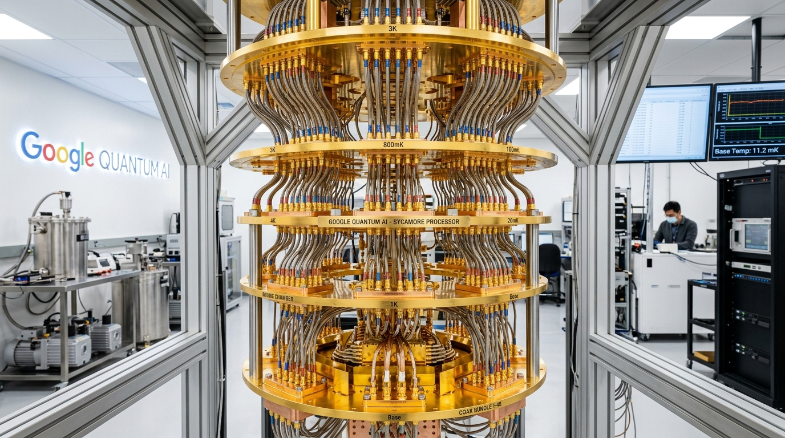

BUILDING QUANTUM COMPUTING FOR OTHERWISE UNSOLVABLE PROBLEMS

Verifiable quantum advantage towards real world applications
Our superconducting quantum processors enable computations that would take classical supercomputers thousands of years to compute. Experience interactive simulations with Cirq and verify statevector outputs on our in-browser engine.
OUR QUANTUM COMPUTING ROADMAP
Our focus is to unlock the full potential of quantum computing by developing a large-scale computer capable of complex, error-corrected computations. We are guided by a roadmap featuring six milestones that will lead us toward top-quality quantum hardware and software for meaningful applications.
Beyond classical
Quantum error correction
Building a long-lived logical qubit
Creating a logical gate
Engineering scale up
Large error-corrected quantum computer
ENGINEERED FOR QUANTUM PRACTICALITY
From quantum supremacy in Nature to the first below-threshold surface code demonstrations on superconducting quantum processors.
Willow QPU Architecture
105 physical qubits operating at 15 millikelvin with real-time feedback. First experimental proof that scaling physical qubit counts decreases logical error rates exponentially.
Explore QPU Simulation →Algorithmic Software Stack
Write quantum algorithms with Cirq, Google's open-source library for NISQ architectures. Synthesize circuits, analyze Pauli expectations, and compile to physical pulses.
Explore Cirq Algorithms →Peer-Reviewed Archives
Interactive reproductions of landmark publications including random circuit sampling, topological surface codes distance-5, and Hartree-Fock molecular electronic simulations.
Browse Research Papers →
Author of Vaisheshika Sutra and founder of Indian atomic theory (Parmanu Vada), proposing that all matter consists of eternal, vibrating, indivisible quanta millennia before modern quantum physics.
Welcome to Ananta
Sign in to access your quantum circuits, simulations, and saved experiments.
Quantum Knowledge Engine (IIT & IISc Curriculum)
Formal mathematical definitions, physical intuition, and research applications for advanced learners
Physical Error Models & Microwave Pulse Dynamics
Decoherence & Noise Channel Modelling
Hadamard (H) Microwave Pulse
Y/2 rotation via shaped Gaussian DRAG envelope with quadrature derivative to prevent state leakage.
q[0], q[1], or q[2]. Multi-qubit gates auto-link.
Unitary Gate Toolbox
Single & two-qubit operatorsFollow the highlighted column to observe statevector evolution step by step.
|ψ⟩ = 1.00 |000⟩
Amplitude Spectrum & Phase Portrait
Born probability |cᵢ|² and complex phase angle φᵢMonte Carlo Measurement Engine (1024 Shots)
Interactive 3D Bloch Sphere (Single-Qubit Projections)
Full Unitary Operator Matrix (U_total = ∏ Uₖ)
8×8 complex matrix transformation across computational basisStep-by-Step Analytical Dirac Proof
Quantum Entanglement & Purity Quantifiers
Wootters Concurrence, Von Neumann Entropy, and Mutual InformationFull Density Matrix ρ = |ψ⟩⟨ψ|
Von Neumann Entropy S = 0.00Framework Code Export
# Initializing circuit code...
Quantum Algorithm Benchmark Labs
Canonical gate-model circuit configurations demonstrating quantum advantage through superposition interference, phase kickback, and entanglement. Each algorithm is accompanied by step-by-step circuit analysis and complexity comparison with classical counterparts.
Ananta AI Research Mentor
Statevector diagnostics, unitary decomposition, parameter-shift gradient explanations, and real-time circuit guidance powered by Gemini. Calibrated for undergraduate through postgraduate quantum computing depth.
🤖 Connect Cloud LLM to Quantum Studio
⚡ Real-time Circuit Telemetry SyncedQuantum Puzzle Arena
Synthesize target quantum states and reproduce canonical algorithm outputs by constructing minimal gate sequences. Each puzzle builds physical intuition for a core quantum phenomenon.
Unlock Skills & Earn XP
Ananta Engine Architecture & Quantum State Mechanics
Technical reference covering statevector evolution, density matrix formalism, gate unitary decompositions, and the Ananta simulation pipeline.
1. Hilbert Space & Statevector Representation
For an n-qubit register, the state |psi> lives in a Hilbert space H of dimension 2^n, represented as a unit complex vector:
|ψ⟩ = Σᵢ cᵢ |i⟩ ∈ ℂ^(2^n), where Σᵢ |cᵢ|² = 1 (Born normalization)
For 3 qubits: 2³ = 8 basis states, spanning |000⟩ through |111⟩. Each amplitude cᵢ ∈ ℂ carries both probability weight |cᵢ|² and phase φᵢ = arg(cᵢ).
2. Gate Unitaries & Propagation
Single-qubit gates act as SU(2) rotations on the Bloch sphere. Multi-qubit gates are constructed via tensor products:
H = (1/√2)·[[1, 1],[1,-1]] X = [[0,1],[1,0]] Z = [[1,0],[0,-1]] S = diag(1, i) T = diag(1, e^(iπ/4)) CX = [[1,0,0,0],[0,1,0,0],[0,0,0,1],[0,0,1,0]] (CNOT in computational basis)
The full evolution of an n-qubit state under a circuit U = Uₖ···U₂U₁ is: |ψ_out⟩ = U|0⟩^⊗n
3. Density Matrix Formalism
For pure states, the density operator rho = |psi>ρ = |ψ⟩⟨ψ|, S(ρ) = -Tr(ρ log₂ρ), Tr(ρ²) = 1 (pure), <1 (mixed)
4. Pauli Observable Expectation Values
For a single qubit in reduced state rho_i = Tr_others(rho), the Pauli expectation values are:
⟨Z⟩ = Tr(Z·ρᵢ) = P(|0⟩) - P(|1⟩) ∈ [-1, +1] ⟨X⟩ = Tr(X·ρᵢ) = 2·Re(ρ₀₁) (off-diagonal coherence) ⟨Y⟩ = Tr(Y·ρᵢ) = 2·Im(ρ₀₁) (imaginary coherence)
5. Decoherence & NISQ Noise Channels
Physical qubits are subject to two primary decay channels: amplitude damping (T1) and dephasing (T2). Gate fidelity under depolarizing noise:
T₁: Energy relaxation |1⟩→|0⟩ at rate Γ₁ = 1/T₁ T₂: Phase dephasing at rate Γ₂ = 1/T₂ = Γ₁/2 + Γ_φ Depolarizing: ρ → (1-ε)·U·ρ·U† + ε·I/2 (gate infidelity ε)
Quantum Research Archive & Textbook Library
A comprehensive, searchable repository of foundational quantum physics papers, canonical algorithm discoveries, premier university textbooks, and ancient Indian atomic treatises.
Real-World Quantum Intuition Lab
Why is quantum mechanics hard to grasp? Because human intuition evolved throwing rocks in a macro world. Explore hands-on physical simulations that make superposition, wave interference, and entanglement obvious.
Struggling with a Concept? Type it below and see it animated!
Tell us what is confusing you (e.g., "I don't get Quantum Tunneling", "Why can't we clone qubits?", "Wavefunction collapse", "Teleportation"). Our engine translates it into a real-world analogy and runs a live interactive simulation.
Quantum Tunneling: Walking Through Walls
Imagine rolling a tennis ball up a steep hill...
Without quantum tunneling, the Sun could not shine...
The Spinning Coin on a Table
A classical bit is a coin flat on a table: definitively Heads ($|0\rangle$) or Tails ($|1\rangle$). Superposition is spinning the coin on its edge: it is a continuous blur of both until you slap your hand down (measurement).
Noise-Canceling Headphones
Why do quantum algorithms use complex phase ($\phi$) and negative signs? Just like AirPods emit an inverted sound wave to cancel airplane engine roar into silence, quantum algorithms cancel wrong answers so only the solution remains.
Synchronized Magic Dice
Two dice separated across the world. Roll Die A in New Delhi and Die B in New York. While each roll is individually 100% random, an entangled Bell pair guarantees both dice always land on the exact same face simultaneously.
Where Quantum Computing Changes Humanity
Why do governments and scientists invest billions? Because quantum computing solves problems that would take every classical computer on Earth millions of years.
Drug Discovery & Cancer Therapies
Molecules are quantum mechanical. Simulating the entangled electrons in penicillin or caffeine exceeds classical supercomputer memory. Quantum simulators design targeted cancer therapies in hours.
Clean Energy & Global Fertilizer
Humanity uses 2-3% of all global electricity making fertilizer at 500°C (Haber-Bosch). Soil bacteria do this at room temperature using a quantum enzyme (Nitrogenase). Quantum simulation could save gigawatts of energy.
Physics-Proof Cybersecurity
Quantum Key Distribution (QKD) utilizes the observer effect: if an eavesdropper listens to your bank encryption key, the quantum wavefunction collapses, instantly revealing the spy.
Global Maritime & Climate Logistics
Optimizing flight paths, cargo ships, and energy grids with millions of variables via QAOA algorithms to reduce global carbon emissions.